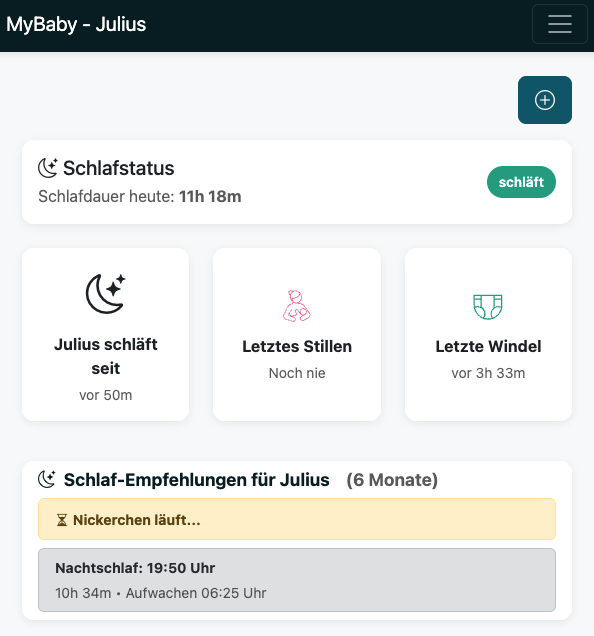
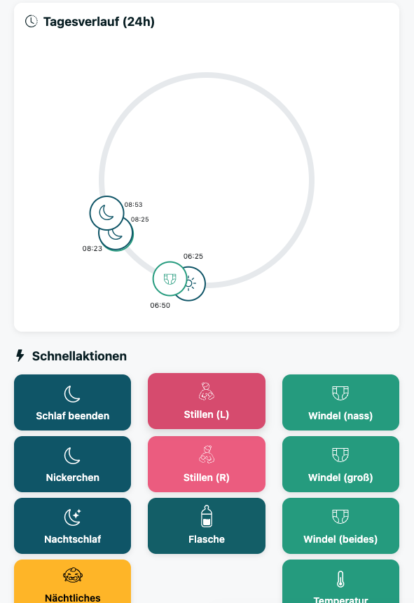
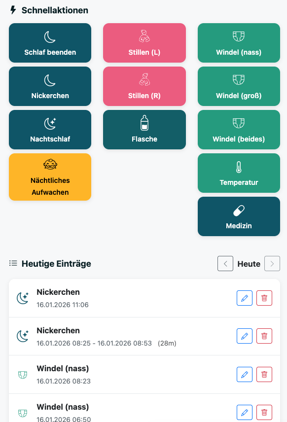
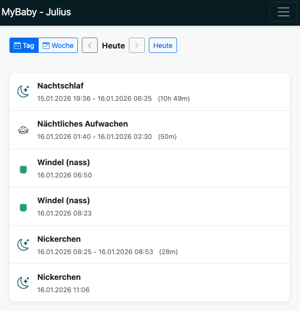
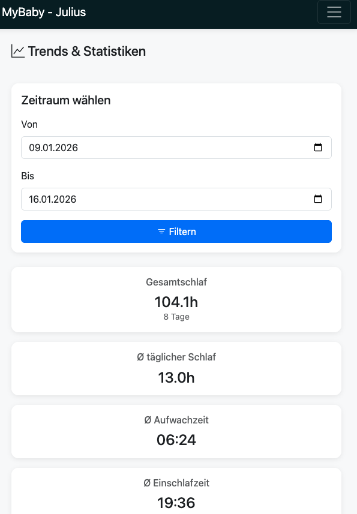
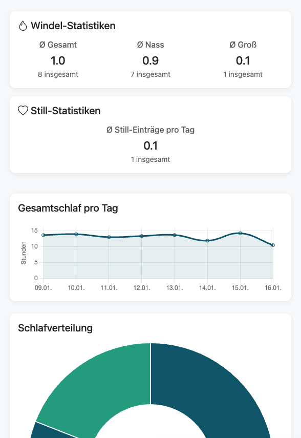
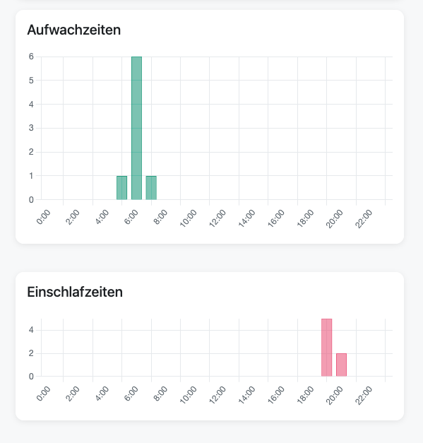
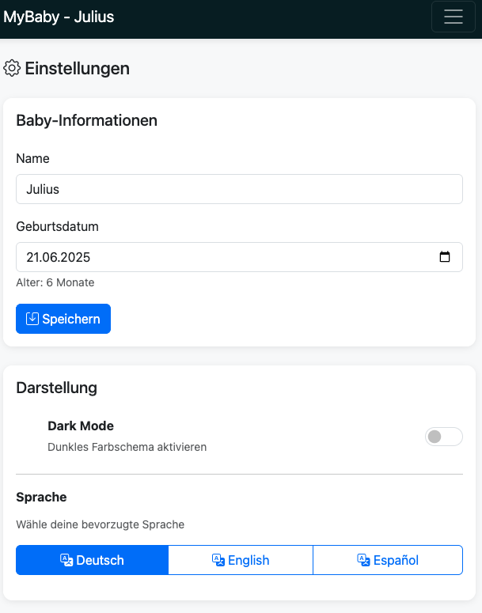

Schlaf, Stillen, Windeln, Brei, Gewicht, Temperatur – alles an einem Ort. Lokal, sicher, ohne Cloud.

Dashboard Übersicht

Intelligente Schlafempfehlungen

Circular Timeline

Schnellaktionen

Einträge – Tagesansicht

Einträge – Wochenansicht

Einstellungen

Trends & Statistiken
Entwickelt für den echten Alltag mit Baby – schnell, übersichtlich, mobil-optimiert.
Nickerchen und Nachtschlaf separat tracken. Mit automatischer Dauerberechnung, Qualitätsbewertung und Einschlaf-Ort.
Basierend auf dem Alter deines Babys und wissenschaftlichen Empfehlungen berechnet die App optimale Schlafzeiten.
Alle Aktivitäten des Tages als 24-Stunden-Kreisdiagramm – auf einen Blick alles im Überblick.
Links/rechts Stillzeiten mit optionaler Endzeit. Flaschenmengen in ml. Alles mit Zeitstempel.
Breigaben mit Menge (g) und optionaler Nahrungsangabe erfassen. Vollständig editierbar und löschbar.
Gewicht erfassen und die Wachstumskurve als interaktives Liniendiagramm in den Trends verfolgen.
Temperaturmessungen, Medikamentengaben und Krankheitsphasen dokumentieren und nachverfolgen.
Schlafmuster, Windel- und Stillstatistiken, Temperaturverlauf und Wachstumskurve. Schnellfilter 7/30/90 Tage.
Vollständig übersetzt auf Deutsch, Englisch und Spanisch. Sprache jederzeit in den Einstellungen wechselbar.
Augenfreundliche Darstellung für nächtliche Eintragungen – damit du und dein Baby nicht aufwachen.
In wenigen Minuten startklar – keine Cloud, keine Anmeldung, deine Daten bleiben bei dir.
# App starten
docker run -d \
--name myBaby \
-p 8000:8000 \
-v $(pwd)/data:/data \
sleepwalker86/mybaby:latest
# Im Browser öffnen:
# http://localhost:8000# docker-compose.yml herunterladen und starten
docker-compose up -d
# Im Browser öffnen:
# http://localhost:8000
# Stoppen:
docker-compose downMehr Details im GitHub Repository
myBaby läuft komplett auf deinem eigenen Gerät. Es werden keine Daten an externe Server gesendet – garantiert.